Adresse
7 rue Bernard Buffet
Hameau St Crépin
27480 Lorleau
 Accueil
Accueil Equipements
Equipements Galerie photos
Galerie photos Histoire du gîte
Histoire du gîte Autour du gîte
Autour du gîte Réservation
Réservation Contact
ContactLes coups de coeur de Jean-Luc & Maria
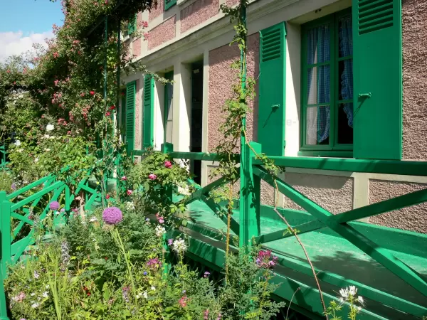
En savoir plus
CULTURE
Visite de la maison et jardin du peintre Claude Monet
Située au coeur du joli village de Giverny, la maison de Claude Monet, où vécut l'artiste, avec sa famille, de 1883 à 1926, est réputée pour avoir été, au travers de ses somptueux jardins aujourd'hui classés Remarquables, une grande source d'inspiration pour l'illustre peintre impressionniste.
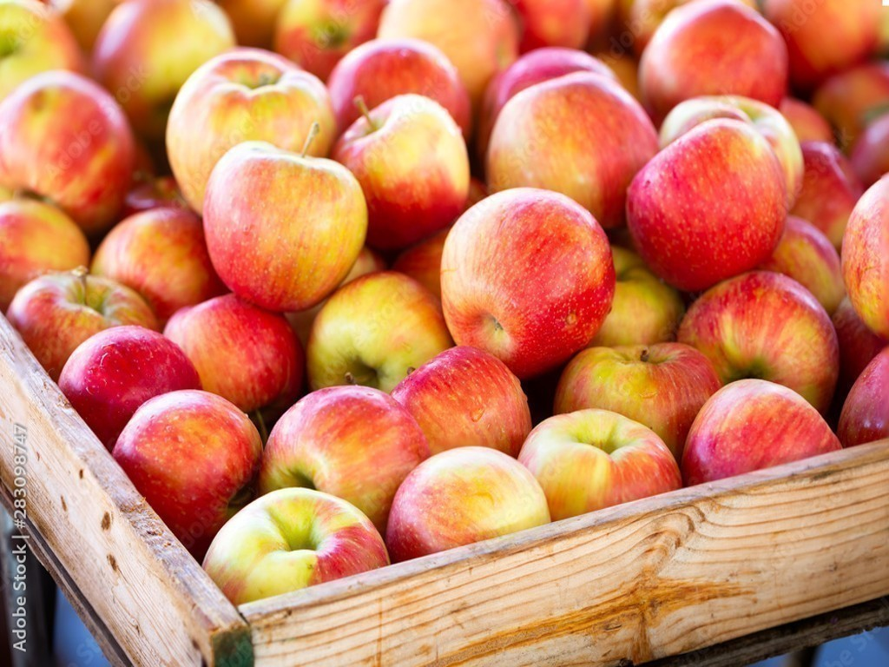
En savoir plus
GASTRONOMIE
Croquez à pleines dents la pomme sucrée de Normandie
Le secret des filles aux joues rouges : cuisinez la délicieuse pomme normande de 1001 façons. Tarte aux pommes, pommeau, cidre, crumble...
La région normande est riche en pommeraies et en recettes savoureuses à base de pommes aussi n'hésitez pas faire le tour des offres de restauration.
Visitez gratuitement une pommeraie : visites par groupes sur rendez-vous.
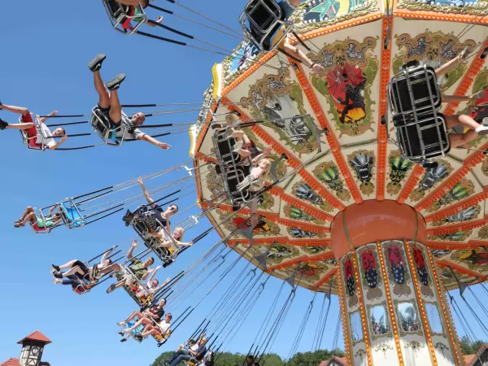
En savoir plus
LOISIRS
Le parc d'activités Saint-Paul : nombreuses attractions.
Pour les enfants comme pour les adultes : ce parc vous enchantera et saura vous procurer des sensations.
L'occasion d'une pause joyeuse lors de votre séjour dans la région normande.
.
Activités autour du gîte
A 36 km de Lorleau
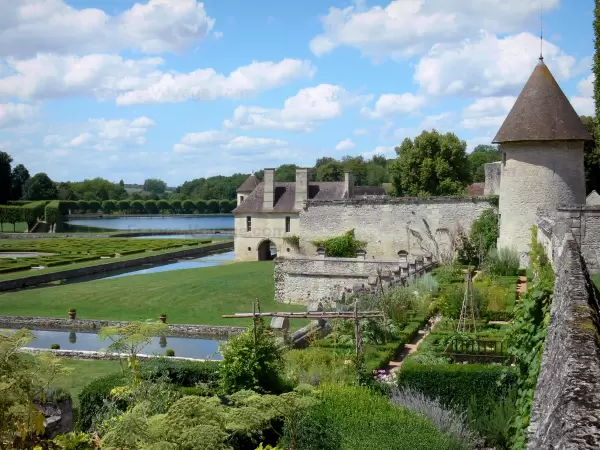Domaine de Villarceaux et son jardin médieval
Situé au coeur du Parc Naturel Régional du Vexin Français, sur la commune de Chaussy, le domaine de Villarceaux, composé d'un manoir du XVIe (château du bas) et d'un château du XVIIIe (château du haut), dispose d'un magnifique parc de 70 hectares, labellisé Jardin Remarquable.
De style Louis XV, le château du haut dévoile, au fil de ses salons et salle à manger, une magnifique collection de tableaux et meubles du XVIIIe siècle.
En période estivale, le domaine de Villarceaux est le théâtre de nombreuses animations, telles que concerts de musique, pièces de théâtre et ateliers pédagogiques.
A 29 km de Lorleau
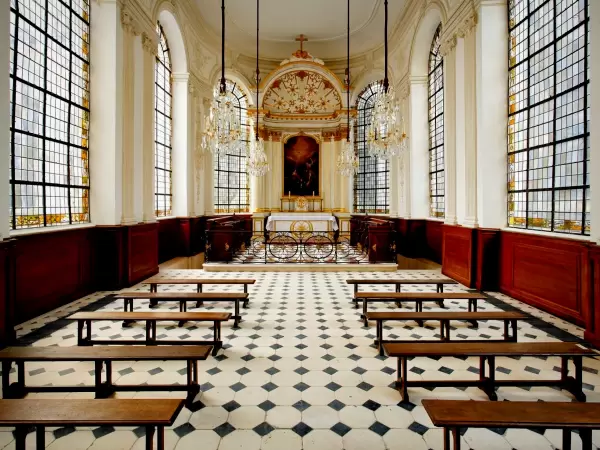L'historial Jeanne d'Arc de Rouen
Musée innovant et à la pointe de la technologie, l'Historial Jeanne d'Arc retrace de façon atypique et passionnante le destin extraordinaire de ce personnage central de l'histoire de France.
Vous serez d'abord propulsé, en tant qu'acteur et témoin, au centre de la célèbre enquête judiciaire qui s'est déroulée à Rouen au Moyen Âge.
De salle en salle, un parcours multimédia immerge le visiteur au cœur de cet épisode du XVe siècle, par des effets audiovisuels aussi captivants qu'instructifs.
Ce véritable parcours-spectacle est mené par un guide virtuel, Jean Juvénal des Ursins, qui a été le maître d'œuvre du procès en réhabilitation de l'héroïne en 1456.
A 29 km de Lorleau
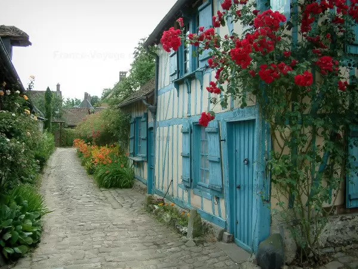Balade fleurie dans le village de Gerberoy
Surnommé le "village aux mille rosiers" : il captive tous les voyageurs par ses rosiers grimpants, hortensias, glycines, marguerites, plantes… c'est une explosion de senteurs et un festival de couleurs !
Le peintre Le Sidaner tomba amoureux de ce village et y créa de superbes jardins en terrasse sur les ruines même du château du XIXe siècle.
Les ruelles pavées, les maisons anciennes en torchis et à pans de bois colorés des XVIIe et XVIIIe siècles, les remparts et la tour Charlemagne viennent ajouter un cachet certain au village.
A 4,4 km de Lorleau
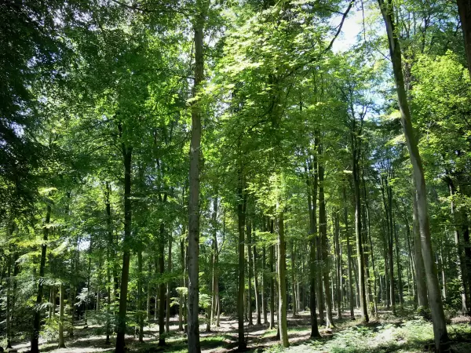Promenade en forêt de Lyons-la-Forêt
Localisée de part et d'autre du pittoresque village de Lyons-la-Forêt, la forêt domaniale de Lyons est un vaste massif forestier de 10 700 hectares, dont l'ensemble, composé d'arbres à haut fût, est réputé pour être l'une des plus belles hêtraies de France.
Jalonné de multiples chemins et sentiers, ce territoire verdoyant, propice au ressourcement, est aussi un lieu de choix pour la pratique de la randonnée pédestre, équestre et VTT.
Idéal pour une sortie en famille. Un sentier, long de 3,7 km, vous permettra de partir à la découverte des richesses du milieu forestier.
.
A 29 km de Lorleau
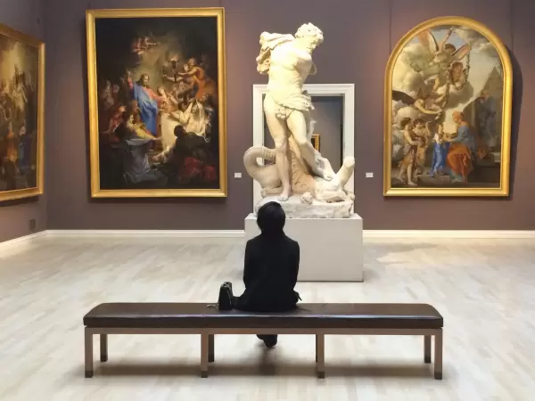Musée des Beaux-Arts de Rouen
Créé en 1801, le musée des Beaux-Arts de Rouen est situé au cœur de la ville, à proximité du square Verdrel. 60 salles, dans lesquelles les XVIIe et XIXe siècles sont particulièrement représentés, sont ouvertes à la visite. Le musée a vu ses collections s'enrichir au cours du XIXe siècle. Après sa restructuration intégrale dans les années 1990, il est aujourd'hui une référence en terme de richesse de ses collections. Son cabinet d'arts graphiques compte à lui seul près de 8 000 œuvres !
A 25 km de Lorleau
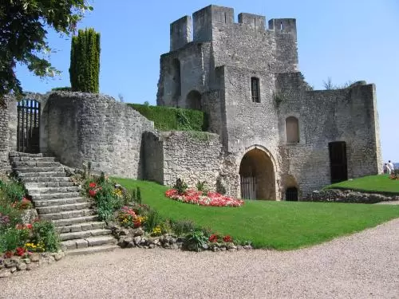Gisors, son chateau-fort et ses colombages
La ville de Gisors, vous invite à découvrir son patrimoine classé, l'église Saint-Gervais-et-Saint-Protais des XIIe-XVIe siècles, le château fort des XIe et XIIe siècles, témoignage de l'architecture militaire médiévale.
Édifiée dès 1097 à la demande du roi d'Angleterre Guillaume le Roux, fils de Guillaume le Conquérant, puis renforcée par Henri II Plantagenêt au XIIe siècle, la forteresse de Gisors, qui a connu la guerre de Cent Ans, ainsi qu'une enceinte fortifiée, où se dresse une motte féodale surmontée d'un donjon octogonal.
A 29 km de Lorleau
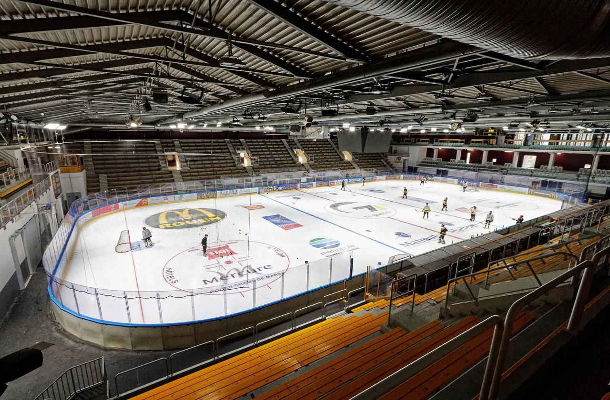Patinoire de l'Ile Lacroix de Rouen
Admirez la fougue des Dragons de Rouen, l'équipe de Hockey saura vous faire vibrer.
A moins que vous ne préfériez tout simplement aller patiner quelques figures sur la glace avec des amis.
A 132 km de Lorleau

Les falaises d'Etretat
Étretat est toujours un site fort, où l’homme est en prise directe avec la nature. La renversante verticalité des falaises de la Côte d’Albâtre contraste sans fausses notes avec la douceur ronde de la grève. Vous laisserez-vous tenter par une balade en mer ou préfèrerez-vous découvrir les falaises par les sentiers qui surplombent la Manche ?
Et si trésor des Rois de France il y avait dans ce cadre mystérieux, soyez certains qu’Arsène Lupin aura su en faire bon usage ! Ici, les légendes n’ont pas toutes besoin d’être écrites, elles vivent d’elles-mêmes dans cet écrin dont la renommée millénaire n’a pas entamé la beauté sauvage.
.
Côté resto
A 29 km de Lorleau
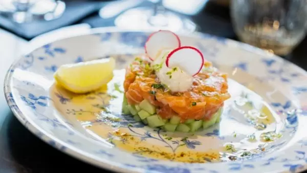Cuisine française chez Madame à Rouen
Environ 25€ par personne
A 29 km de Lorleau
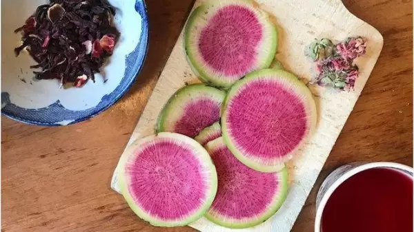Le jardin des ifs et restaurant de Gerberoy
Environ 40€ par personne